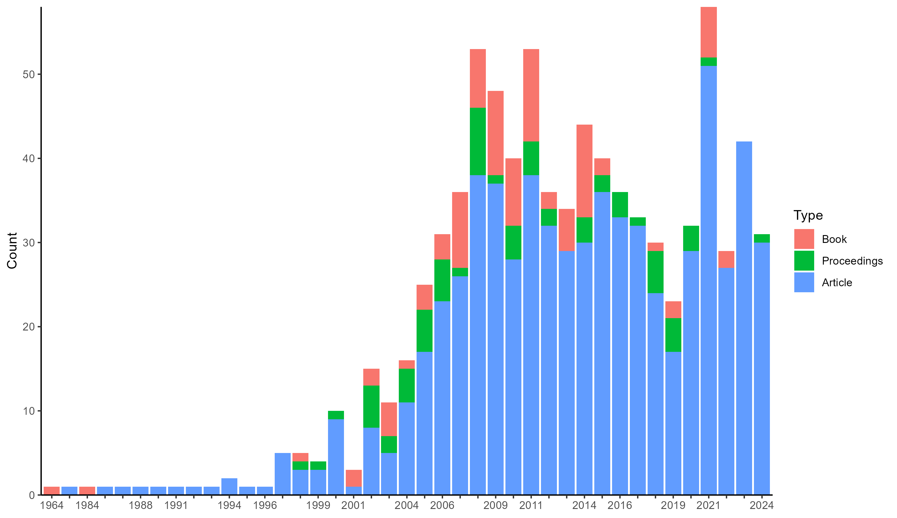
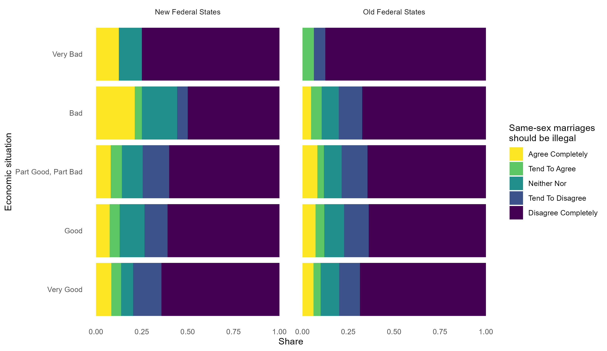

GESIS Search is a service by GESIS - Leibniz Institute for the Social
Sciences to look up information about research data, survey variables,
empirical instruments and tools, literature, and library collections
from the social sciences. rgesis is a package to query its
search engine to retrieve metadata on search records and to download
survey data from GESIS’ comprehensive data archive. It does so in a
reproducible manner that can easily be embedded in code files and
publications. The package mainly consists of three functions
- Authenticate a session using
gesis_auth() - Search the GESIS catalogue using
gesis_search() - Retrieve data using
gesis_data()
Authentication
GESIS expects all users who wish to download a data file to be logged
in. The gesis_auth() function takes over this task purely
programmatically. You need to provide the function with a user email and
a password. This can be done either by passing them as function
arguments or by setting them as global options. It is recommended to do
the latter using a .Rprofile file. This can look something
like this:
options(
gesis_email = "jonas.lieth@gesis.org",
gesis_password = "****",
gesis_download_purpose = "non_scientific"
)Here, I also specified a download purpose which must be specified to download data. If you know that this purpose is not going to change between queries, you can specify it globally.
When the credentials are set, you can run gesis_auth()
without arguments. This step 1. sends a login request, 2. checks if you
can login, and 3. stores the credentials in a secure keyring storage. If you get a
success message, you are good to go.
gesis_auth()
# ✔ Successfully performed GESIS login.GESIS Search
Even without authentication, you can use rgesis to
retrieve metadata on GESIS search entries like datasets, variables,
publications or tools. This can be done using the
gesis_search() function which offers tools for querying and
filtering the GESIS search engine. For example, to get metadata on the
German General Social Survey (ALLBUS) from 2018, you can do:
gesis_search(
"allbus",
type = "research_data",
collection_year = c(2018, 2018)
)
#> A list of <gesis_hits> with 10 hits
#>
#> <gesis_hit>
#> Type: research_data
#> ID: ZA5272
#> Title: German General Social Survey - ALLBUS 2018
#> Date: 2019
#> Persons:
#> • Diekmann, Andreas
#> • Hadjar, Andreas
#> • Kurz, Karin
#> • Rosar, Ulrich
#> • Wagner, Ulrich
#> • ... and 1 more
#>
#> <gesis_hit>
#> Type: research_data
#> ID: ZA5270
#> Title: Allgemeine Bevölkerungsumfrage der Sozialwissenschaften ALLBUS 2018
#> Date: 2019
#> Persons:
#> • Diekmann, Andreas
#> • Hadjar, Andreas
#> • Kurz, Karin
#> • Rosar, Ulrich
#> • Wagner, Ulrich
#> • ... and 1 more
#>
#> <gesis_hit>
#> Type: research_data
#> ID: ZA5260
#> Title: Allgemeine Bevölkerungsumfrage der Sozialwissenschaften - ALLBUS
#> Sensitive Regionaldaten
#> Date: 2021
#> Persons:
#> • Allerbeck, Klaus
#> • Allmendinger, Jutta
#> • Andreß, Hans-Jürgen
#> • Bürklin, Wilhelm
#> • Diekmann, Andreas
#> • ... and 21 more
#> # ℹ 7 more hits
#> # ℹ Use `print(n = ...)` to see more hits"allbus" is the query string,
"research_data" is the result type (you can also search for
other types like publications or tools), and c(2018, 2018)
is the time in which the queried dataset must be collected.
If you need this data in a more workable manner, you can set
tidy = TRUE. This will convert the metadata to a pretty
dataframe. Be aware that not all metadata fields can be fit in a
rectangular shape and must be dropped. If completeness of metadata
records is a priority, you should leave the output untidy.
gesis_search(
"allbus",
type = "research_data",
collection_year = c(2018, 2018),
tidy = TRUE
)
#> # A tibble: 10 × 104
#> title study_title id date date_recency study_number portal_url
#> <chr> <chr> <chr> <chr> <chr> <chr> <chr>
#> 1 German General … German Gen… ZA52… 2019 2018 ZA5272 https://d…
#> 2 Allgemeine Bevö… Allgemeine… ZA52… 2019 2018 ZA5270 https://d…
#> 3 Allgemeine Bevö… Allgemeine… ZA52… 2021 2018 ZA5260 https://d…
#> 4 Allgemeine Bevö… Allgemeine… ZA52… 2021 2018 ZA5274 https://d…
#> 5 German General … German Gen… ZA52… 2021 2018 ZA5276 https://d…
#> 6 Allgemeine Bevö… Allgemeine… ZA52… 2021 2018 ZA5262 https://d…
#> 7 German General … German Gen… ZA52… 2019 2018 ZA5273 https://d…
#> 8 German General … German Gen… ZA52… 2021 2018 ZA5277 https://d…
#> 9 Allgemeine Bevö… Allgemeine… ZA52… 2019 2018 ZA5271 https://d…
#> 10 Allgemeine Bevö… Allgemeine… ZA52… 2021 2018 ZA5275 https://d…
#> # ℹ 97 more variables: person_sort <chr>,
#> # primary_researchers_advisory_board_institution <list>, type <chr>,
#> # subtype <chr>, abstract <chr>, source <chr>, time_collection <chr>,
#> # time_collection_max_year <chr>, time_collection_min_year <chr>,
#> # time_collection_years <list>, countries_collection <list>,
#> # countries_iso <list>, countries_free <list>, countries_view <list>,
#> # methodology_collection <chr>, analysis_system <chr>, …While the first 10 results are enough for many use cases, sometimes
you just need more than that. By default, gesis_search()
only requests the first search page. You can choose which pages to
request by setting the pages argument. You can even request
all pages by setting it to NULL.
gesis_search(
"allbus",
type = "research_data",
collection_year = c(2018, 2018),
tidy = TRUE,
pages = NULL
)
#> # A tibble: 13 × 120
#> title study_title id date date_recency study_number portal_url
#> <chr> <chr> <chr> <chr> <chr> <chr> <chr>
#> 1 German General … German Gen… ZA52… 2019 2018 ZA5272 https://d…
#> 2 Allgemeine Bevö… Allgemeine… ZA52… 2019 2018 ZA5270 https://d…
#> 3 Allgemeine Bevö… Allgemeine… ZA52… 2021 2018 ZA5260 https://d…
#> 4 Allgemeine Bevö… Allgemeine… ZA52… 2021 2018 ZA5274 https://d…
#> 5 German General … German Gen… ZA52… 2021 2018 ZA5276 https://d…
#> 6 Allgemeine Bevö… Allgemeine… ZA52… 2021 2018 ZA5262 https://d…
#> 7 German General … German Gen… ZA52… 2019 2018 ZA5273 https://d…
#> 8 German General … German Gen… ZA52… 2021 2018 ZA5277 https://d…
#> 9 Allgemeine Bevö… Allgemeine… ZA52… 2019 2018 ZA5271 https://d…
#> 10 Allgemeine Bevö… Allgemeine… ZA52… 2021 2018 ZA5275 https://d…
#> 11 Harmonizing and… Harmonizin… SDN-… 2021 2021 NA https://d…
#> 12 Harmonizing and… Harmonizin… SDN-… 2021 2021 NA https://d…
#> 13 Harmonizing and… Harmonizin… SDN-… 2021 2021 NA https://d…
#> # ℹ 113 more variables: person_sort <chr>,
#> # primary_researchers_advisory_board_institution <list>, type <chr>,
#> # subtype <chr>, abstract <chr>, source <chr>, time_collection <list>,
#> # time_collection_max_year <chr>, time_collection_min_year <chr>,
#> # time_collection_years <list>, countries_collection <list>,
#> # countries_iso <list>, countries_free <list>, countries_view <list>,
#> # methodology_collection <list>, analysis_system <chr>, …To exemplify, we can perform a very basic bibliographic analysis of the evolution of climate change literature based on the most relevant 5000 records in the GESIS archive.
cc <- gesis_search(
"climate change",
type = "publication",
pages = 1:500,
tidy = TRUE
)
ggplot(na.omit(cc[c("date", "subtype")])) +
geom_bar(aes(x = date, fill = subtype)) +
scale_y_continuous(expand = c(0, 0)) +
scale_fill_discrete("Type", labels = c(
book = "Book",
in_proceedings = "Proceedings",
journal_article = "Article"
)) +
guides(x = guide_axis(check.overlap = TRUE)) +
labs(x = NULL, y = "Count") +
theme_classic()
Finally, if you already know a dataset or record you want to look up,
you can use the gesis_get() function to search for a
specific record ID. These IDs can be retrieved from the metadata records
returned by gesis_search().
allbus <- gesis_get("ZA5272")
allbus
#> <gesis_hit>
#> Type: research_data
#> ID: ZA5272
#> Title: German General Social Survey - ALLBUS 2018
#> Date: 2019
#> Persons:
#> • Diekmann, Andreas
#> • Hadjar, Andreas
#> • Kurz, Karin
#> • Rosar, Ulrich
#> • Wagner, Ulrich
#> • ... and 1 moreData retrieval
Both of the last two steps ultimately help to retrieve survey data from the GESIS data archive. First, authentication is needed to be allowed to download in the first place. Second, a metadata record (or at least a record ID) is needed to specify what dataset you want to download. Accordingly, we can simply use the allbus record we queried above to download a .sav file from GESIS.
path <- gesis_data(allbus, select = "\\.sav")Since GESIS files can come in all kinds of file formats, the package leaves reading the data to the user. In this case, we can use the haven package to read the downloaded file.
library(haven)
allbus_data <- read_sav(path)
allbus_data
#> ! Multiple files in zip: reading ''ZA5272_v1-0-0.sav''
#> # A tibble: 3,477 × 708
#> za_nr doi version respid eastwest german ep01 ep03 ep04 ep06 lm01 lm02 lm19
#> <dbl+lbl> <chr> <chr> <dbl> <dbl+lb> <dbl+l> <dbl+l> <dbl+l> <dbl+l> <dbl+l> <dbl+l> <dbl> <dbl+l>
#> 1 5272 [GGSS 2018] doi:10… 1.0.0 … 1 1 [OLD … 1 [YES… 1 [VER… 2 [GOO… 2 [SOM… 3 [THE… 6 [6 D… 75 1 [YES]
#> 2 5272 [GGSS 2018] doi:10… 1.0.0 … 2 2 [NEW … 1 [YES… 2 [GOO… 4 [BAD] 3 [THE… 3 [THE… 7 [ALL… 240 1 [YES]
#> 3 5272 [GGSS 2018] doi:10… 1.0.0 … 3 1 [OLD … 1 [YES… 2 [GOO… 2 [GOO… 3 [THE… 2 [SOM… 2 [2 D… 120 1 [YES]
#> 4 5272 [GGSS 2018] doi:10… 1.0.0 … 4 2 [NEW … 1 [YES… 2 [GOO… 2 [GOO… 3 [THE… 3 [THE… 7 [ALL… 180 1 [YES]
#> 5 5272 [GGSS 2018] doi:10… 1.0.0 … 5 2 [NEW … 1 [YES… 3 [PAR… 2 [GOO… 3 [THE… 2 [SOM… 7 [ALL… 60 1 [YES]
#> 6 5272 [GGSS 2018] doi:10… 1.0.0 … 6 1 [OLD … 1 [YES… 1 [VER… 3 [PAR… 3 [THE… 2 [SOM… 3 [3 D… 120 1 [YES]
#> 7 5272 [GGSS 2018] doi:10… 1.0.0 … 7 1 [OLD … 1 [YES… 3 [PAR… 2 [GOO… 3 [THE… 3 [THE… 7 [ALL… 120 1 [YES]
#> 8 5272 [GGSS 2018] doi:10… 1.0.0 … 8 1 [OLD … 1 [YES… 2 [GOO… 3 [PAR… 3 [THE… 2 [SOM… 2 [2 D… 60 2 [NO]
#> 9 5272 [GGSS 2018] doi:10… 1.0.0 … 9 1 [OLD … 1 [YES… 1 [VER… 2 [GOO… 4 [SOM… 3 [THE… 3 [3 D… 60 1 [YES]
#> 10 5272 [GGSS 2018] doi:10… 1.0.0 … 10 2 [NEW … 1 [YES… 2 [GOO… 2 [GOO… 2 [SOM… 3 [THE… 7 [ALL… 240 1 [YES]
#> # ℹ 3,467 more rows
#> # ℹ 695 more variables: lm20 <dbl+lbl>, lm21 <dbl+lbl>, lm22 <dbl+lbl>, lm14 <dbl+lbl>, lm23 <dbl+lbl>,
#> # lm24 <dbl+lbl>, pa09 <dbl+lbl>, pa10 <dbl+lbl>, pa11 <dbl+lbl>, pa12 <dbl+lbl>, pa13 <dbl+lbl>,
#> # pa14 <dbl+lbl>, pa15 <dbl+lbl>, pa16 <dbl+lbl>, pa17 <dbl+lbl>, pa08a <dbl+lbl>, pa18 <dbl+lbl>,
#> # pa19 <dbl+lbl>, pp06 <dbl+lbl>, pp07 <dbl+lbl>, pp08 <dbl+lbl>, pp09 <dbl+lbl>, pp10 <dbl+lbl>,
#> # pp12 <dbl+lbl>, pp17 <dbl+lbl>, pp18 <dbl+lbl>, pp19 <dbl+lbl>, pp20 <dbl+lbl>, pp22 <dbl+lbl>,
#> # pp60 <dbl+lbl>, pp23 <dbl+lbl>, pp61 <dbl+lbl>, pp62 <dbl+lbl>, pp24 <dbl+lbl>, pp25 <dbl+lbl>, …
#> # ℹ Use `print(n = ...)` to see more rows, and `colnames()` to see all variable names
library(dplyr)
library(ggplot2)
library(stringr)
allbus_data <- allbus_data |>
select(eastwest, economic_situation = ep01, samesex_marriage = pa12) |>
mutate(across(everything(), .fns = ~as_factor(.x))) |>
mutate(eastwest = str_to_title(eastwest)) |>
na.omit()
ggplot(allbus_data, aes(economic_situation)) +
geom_bar(
aes(fill = samesex_marriage),
position = position_fill(reverse = TRUE)
) +
facet_wrap(~eastwest) +
scale_fill_viridis_d(
name = "Same-sex marriages\nshould be illegal",
labels = str_to_title,
direction = -1
) +
scale_x_discrete(labels = str_to_title) +
coord_flip() +
theme_minimal() +
labs(x = "Economic situation", y = "Share") +
theme(panel.grid = element_blank())